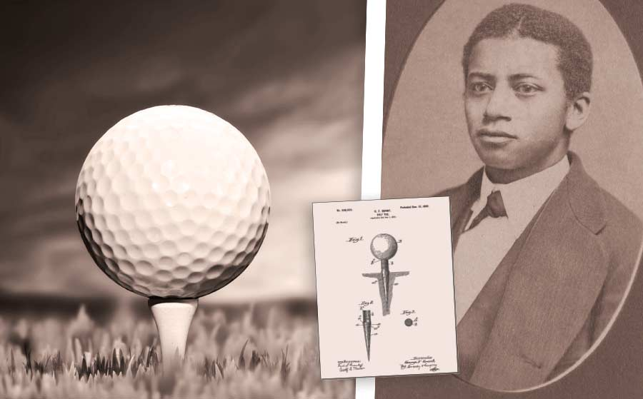

Here are just some more impression Scottish inventions that didn't quite make our top 5 but have had a massive impact on the world,
from people's favourite hobbies to life saving innovations!
The idea of using fingerprinting for use in identifying criminals
belongs to Scottish doctor, Henry Faulds, who first suggested it back in 1880. He
came up with the idea while working on archaeological digs in Japan and noticing
finger prints on shards of ancient pottery.

The origins of golf are unclear and much debated. However, it is generally
accepted that modern golf developed in Scotland during the Middle Ages. The game did
not find international popularity until the late 19th century. It is a highly popular and much loved sport.
The breakthrough for the MRI scanner was made by a team working at the
University of Aberdeen. It is an incredibly important piece of technology in the medical
world, which has had a major impact on how we view the human body. More than 8 billions scans have been completed.
Thanks to Sir Alexander Fleming discovery of penicillin he is perhaps one of the best known Scots.
His discovery was by accident when returning from a family holiday he found mould growing on a Petri dish.
The mould seemed to be stopping bacteria around it from growing. He then realised the mould produced a
defense chemical that could kill bacteria.
When GTA 5 launched, it became the best-selling game of all time in the US. Grand Theft
Auto is the baby of Scottish video game design legend David Jones, who previously had DMA Designs, now
known as Rockstar North. Rockstars headquarters are based right beside the Scottish Parliament in Edinburgh.
The revolutionary needle is all thanks to Scottish physician, Alexander Wood,
who developed the first hypodermic needle in 1853. Wood actually came up with the idea for the device
by studying how a bee delivers its sting. These days, the use of hypodermic needles in medicine is common-place.
Whether it’s an immunisation, giving blood, or receiving an injection of some kind, countless millions
of people around the world have experienced the sharp prick of a hypodermic needle.
In 1755 Scottish mechanic Alexander Cumming developed the S bend toilet, he patented this design for use in toilets,
an invention still in use today. The invention uses standing water to block out foul smells from the connecting sewers.
The pneumatic tyre was invented by James Boyd Dunop from Ayrshire in 1888. He was
actually a veterinary surgeon, running a successful practice. When he attempted to amke a pneumatic tyre
for his son's tricycle that gained him and his invention fame. Dunlop's invention was picked up quickly by cyclists.
The invention of the daily disposable contact lens completely revolutionised the world
of optics and changed the lives of countless millions of people with vision impairment. The son of a west
coast curling stone manufacturer, Scottish-born Ron Hamilton developed the disposable lens in 1995 while
working from a makeshift laboratory in his back garden.